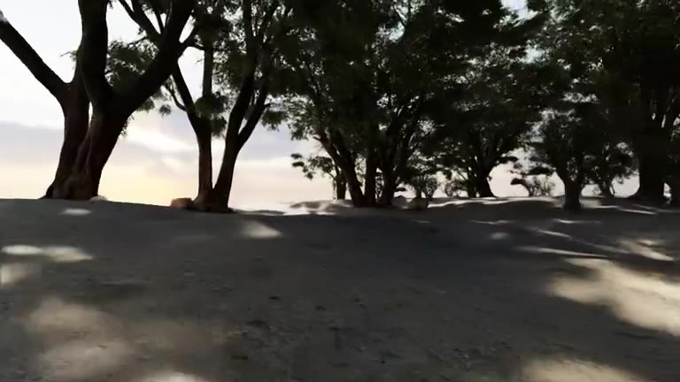

NAVFORGE / CAPABILITY-ORIENTED NAVIGATION
六种能力。
每一种，3 + 1。
18 个训练场景，6 个测试场景。
从语言与空间，到身体与运动。
按飞书选定资产总览，逐场景对应 JiangXing 的实际文件与验证记录。

SE / COASTAL SEED03 · TEST SCENE24SCENES / 06 CAPABILITIES
01 / CURRENT SCENE CONFIGURATIONFEISHU REVISION
配置明确。
版本可追溯。
每维固定 3 个训练场景 + 1 个测试场景。
核对截至
以“选定资产总览”和各能力的场景资产表为当前配置。飞书后面的历史任务列表仍有旧编号和候选；SE 草甸、室内仓储列为扩展/备选，Milton 及旧 MP Bistro 任务保留在归档中。
02 / SCENES & EVIDENCE03 TRAIN + 01 TEST / PER CAPABILITY
走进场景。
看清验证到了哪一步。
24 段完整相机漫游，保持原速与原时长。
网页为 768 像素宽展示副本，飞书保留原片。
下方视频均为专家相机回放；物理执行状态独立注明。历史参考路线与模型成绩按原场景、配置和协议保留，未核对版本的记录不会升级为当前场景的通过结论。
03 / MODEL EVALUATIONVERSIONED RUNS
模型测评。
按运行与协议读结果。
机器人参考路线、相机漫游与模型自主导航
分别展示。
9 项探索复测 · 旧版简单档 / 完全档
简单档 SR 2/9，完全档 SR 0/9。保留原任务身份、评分与三视角录像。
2026-11-09 · MP / SE 原生协议运行快照
模型：GPT-6 Astra。3 项已结束，均未成功；3 项待完成（含等待空闲 GPU）。以下按运行时任务 ID 与配置哈希归档，尚未与上方当前 USD 建立版本一致性，不汇入 24 场景的正式汇总。MP01 为旧 Bistro 任务。
SE05、MP03 使用墙钟预算，计入模型等待；MP02 使用仿真计时，三者不可直接比较速度。
04 / VERSIONED ARCHIVE
打开历史任务归档 ↗旧设计，完整留档。
2026-10-30 的 26 个任务样例、旧资产表、2026-11-07 参考实跑摘要与录像继续可查。